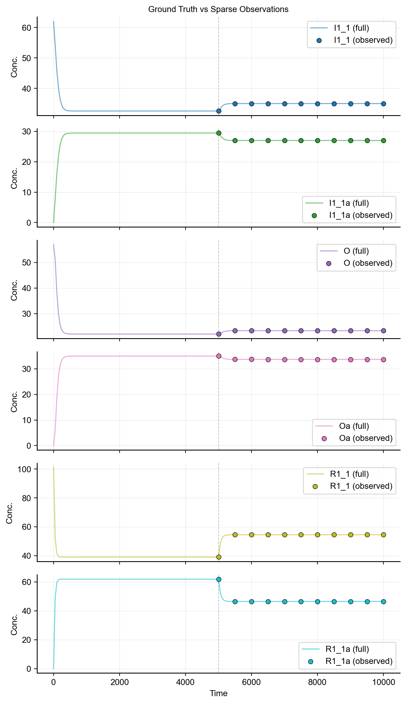
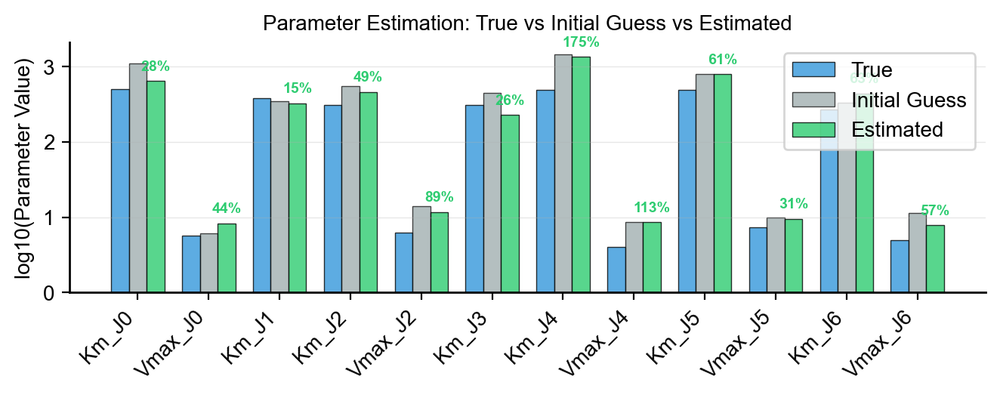
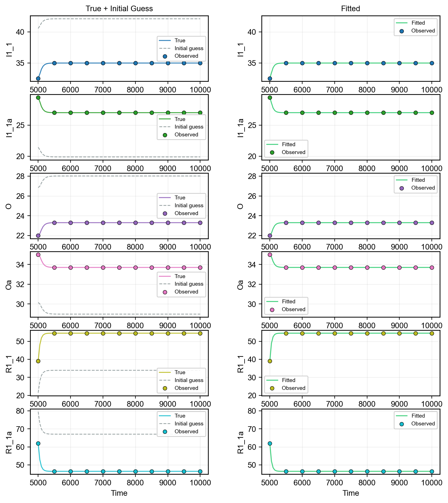
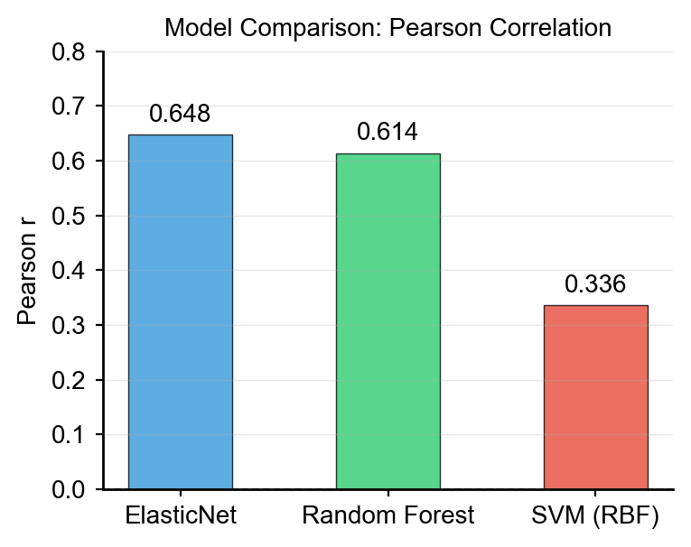

Advanced Workflows
Kinetic Parameter Tuning
The KineticParameterTuner generates kinetic parameters that ensure robust signal propagation through the network. Without tuning, random parameter values may produce unresponsive dynamics or 'flat' responses unintentionally.
Why Tuning Matters
In hierarchical signaling networks, signal propagation depends on the balance between forward (activation) and backward (deactivation) reaction rates. The tuner solves the full nonlinear kinetic equations to find parameters where each species reaches a target active percentage.
Usage via VirtualCell
Tuning is enabled by default when compiling:
from synthetic import Builder
vc = Builder.specify(degree_cascades=[3, 6, 15], random_seed=42)
# Kinetic tuning is applied automatically during compile()
Customize tuning parameters:
vc = Builder.specify(
degree_cascades=[3, 6, 15],
random_seed=42,
auto_compile=False,
)
vc.compile(
use_kinetic_tuner=True,
active_percentage_range=(0.3, 0.7), # Target 30-70% active states
X_total_multiplier=5.0, # Km_b = X_total * 5.0
ki_val=100.0, # Constant Ki for all inhibitors
v_max_f_random_range=(5.0, 10.0), # Forward Vmax range
)
Accessing Tuning Results
# Target concentrations the tuner aimed for
targets = vc.get_target_concentrations()
for species, concentration in targets.items():
print(f"{species}: {concentration:.3f}")
# Regulator-parameter mappings
regulator_map = vc.model.get_regulator_parameter_map()
for regulator, params in regulator_map.items():
print(f"Regulator {regulator} affects: {list(params.keys())}")
Direct Usage
Use KineticParameterTuner without the high-level API:
from synthetic.Specs.DegreeInteractionSpec import DegreeInteractionSpec
from synthetic.Specs.Drug import Drug
from synthetic.utils.kinetic_tuner import KineticParameterTuner
# Create specification
spec = DegreeInteractionSpec(degree_cascades=[3, 6, 15])
spec.generate_specifications(random_seed=42, feedback_density=0.5)
# Add drug
drug = Drug(
name="D",
start_time=5000.0,
default_value=0.0,
regulation=["R1_1", "R1_2", "R1_3"],
regulation_type=["down", "down", "down"],
)
spec.add_drug(drug, value=100.0)
# Generate and precompile model
model = spec.generate_network("MyNetwork", random_seed=42)
model.precompile()
# Tune parameters
tuner = KineticParameterTuner(model, random_seed=42)
updated_params = tuner.generate_parameters(
active_percentage_range=(0.3, 0.7),
X_total_multiplier=5.0,
ki_val=100.0,
v_max_f_random_range=(5.0, 10.0),
)
# Apply tuned parameters
for param_name, value in updated_params.items():
model.set_parameter(param_name, value)
# Get target concentrations for validation
target_concentrations = tuner.get_target_concentrations()
Parameter Estimation
Synthetic models can serve as ground truth for testing parameter estimation methods. Since you know the true parameters, you can validate calibration algorithms. Typically, in real experiments, you have sparse timecourse data for a few species, so we will mimic that scenario.
Setup: Ground Truth + Sparse Observations
import numpy as np
from synthetic import Builder
from synthetic.Solver.ScipySolver import ScipySolver
# Build a small model with known parameters
vc = Builder.specify(degree_cascades=[1, 2], random_seed=42)
# Simulate dense ground truth
antimony = vc.model.get_antimony_model()
solver = ScipySolver()
solver.compile(antimony, jit=False)
timecourse_full = solver.simulate(start=0, stop=10000, step=201)
# Store ground truth
true_params = vc.model.get_parameters()
true_initial = vc.model.get_state_variables()
# Downsample to sparse observations (mimicking real experiments)
DRUG_TIME = 5000.0
sparse_times = np.array([5000, 5500, 6000, 6500, 7000, 7500, 8000, 8500, 9000, 9500, 10000])
sparse_indices = [np.argmin(np.abs(timecourse_full['time'].values - t)) for t in sparse_times]
timecourse_sparse = timecourse_full.iloc[sparse_indices].reset_index(drop=True)
Parameter Selection
Select identifiable parameters for estimation (typically Km and Vmax values):
param_names = [p for p in true_params.keys() if p.startswith('Km_') or p.startswith('Vmax_')][:12]
true_values = np.array([true_params[p] for p in param_names])
Objective Function
Define an objective that simulates with trial parameters and computes MSE against sparse observations:
species_to_fit = [s for s in timecourse_sparse.columns if s != 'time']
def objective(log_params):
trial_params = dict(zip(param_names, np.exp(log_params)))
solver.set_state_values(true_initial)
solver.set_parameter_values(trial_params)
try:
tc = solver.simulate(start=0, stop=10000, step=201)
except Exception:
return 1e10 # Penalty for failed simulation
sim_indices = [np.argmin(np.abs(tc['time'].values - t)) for t in sparse_times]
residuals = []
for sp in species_to_fit:
sim_vals = tc[sp].values[sim_indices]
obs_vals = timecourse_sparse[sp].values
residuals.append((sim_vals - obs_vals) ** 2)
return np.mean(residuals)
Optimization
Run optimization in log-space to enforce positivity:
from scipy.optimize import minimize
# Perturbed initial guess
initial_values = true_values * np.random.uniform(0.3, 3.0, size=len(param_names))
log_initial_guess = np.log(initial_values)
log_bounds = [(np.log(0.01 * tv), np.log(100.0 * tv)) for tv in true_values]
result = minimize(
objective,
log_initial_guess,
method='L-BFGS-B',
bounds=log_bounds,
options={'maxiter': 200, 'ftol': 1e-12},
)
estimated_values = np.exp(result.x)
Evaluating Results
Compare estimated parameters to ground truth:

for i, p in enumerate(param_names):
err = abs(estimated_values[i] - true_values[i]) / true_values[i] * 100
print(f"{p:<15} True: {true_values[i]:.3f} Estimated: {estimated_values[i]:.3f} Error: {err:.1f}%")
Simulate with estimated parameters to visualize the fit:


solver.set_state_values(true_initial)
solver.set_parameter_values(dict(zip(param_names, estimated_values)))
timecourse_fitted = solver.simulate(start=0, stop=10000, step=201)
Model Export & Interoperability
Export Synthetic models to standard formats for use in other tools.
SBML Export
SBML (Systems Biology Markup Language) is the standard for sharing biochemical models:
from synthetic import Builder
vc = Builder.specify(degree_cascades=[2, 5, 10], random_seed=42)
model = vc.model
# Save to file
model.save_sbml_model_as('synthetic_model.sbml')
# Get as string
sbml_string = model.get_sbml_model()
SBML files can be imported into COPASI, libRoadRunner, and other SBML-compliant tools.
Antimony Export
Antimony is a human-readable format for model inspection and modification:
# Save to file
model.save_antimony_model_as('synthetic_model.ant')
# Get as string
antimony_string = model.get_antimony_model()
Model Inspection
# Model overview
print(model.head())
# Statistics
print(f"Species: {len(model.get_state_variables())}")
print(f"Parameters: {len(model.get_parameters())}")
print(f"Reactions: {len(model.reactions)}")
ML Benchmarking
Synthetic datasets are designed for benchmarking machine learning models with known ground truth.
Train/Test with sklearn

from sklearn.ensemble import RandomForestRegressor
from sklearn.model_selection import train_test_split
X, y = make_dataset_drug_response(n=1000, cell_model=vc, target_specie='Oa')
X_train, X_test, y_train, y_test = train_test_split(X, y, test_size=0.2, random_state=42)
model = RandomForestRegressor(random_state=42)
model.fit(X_train, y_train)
score = model.score(X_test, y_test)
print(f"R^2 score: {score:.3f}")
Comparing Feature Types
Compare predictive power of different feature representations:
from sklearn.linear_model import LinearRegression
from sklearn.model_selection import cross_val_score
# Initial values as features (default X)
r2_initial = cross_val_score(LinearRegression(), X, y, cv=5, scoring='r2').mean()
# Kinetic parameters as features
r2_params = cross_val_score(LinearRegression(), parameters, y, cv=5, scoring='r2').mean()
# Timecourse last-point features (activated species only)
X_tc = X_timecourse[[c for c in X_timecourse.columns if c.endswith('a') and c != 'Oa']]
r2_tc = cross_val_score(LinearRegression(), X_tc, y, cv=5, scoring='r2').mean()
print(f"Initial values R^2: {r2_initial:.3f}")
print(f"Kinetic params R^2: {r2_params:.3f}")
print(f"Timecourse R^2: {r2_tc:.3f}")
Low-Level API Access
For maximum control, bypass the high-level Builder/VirtualCell API and use the underlying components directly.
Direct Spec Usage
from synthetic.Specs.DegreeInteractionSpec import DegreeInteractionSpec
from synthetic.Specs.Drug import Drug
# Create specification
spec = DegreeInteractionSpec(degree_cascades=[1, 2, 5])
spec.generate_specifications(random_seed=42, feedback_density=0.5)
# Add drug manually
drug = Drug(
name="D",
start_time=5000.0,
default_value=0.0,
regulation=["R1_1", "R1_2", "R1_3"],
regulation_type=["down", "down", "down"],
)
spec.add_drug(drug, value=100.0)
Direct Model Building
# Generate network from specification
model = spec.generate_network(
network_name="MyNetwork",
mean_range_species=(50, 150),
rangeScale_params=(0.8, 1.2),
random_seed=42,
)
model.precompile()
# Inspect and modify
print(model.get_state_variables())
print(model.get_parameters())
# Set specific values
model.set_parameter('Km_J0', 100.0)
model.set_state('R1_1', 80.0)
Direct Solver Usage
from synthetic.Solver.ScipySolver import ScipySolver
# Get model string and simulate
antimony = model.get_antimony_model()
solver = ScipySolver()
solver.compile(antimony, jit=True)
# Override states and parameters
solver.set_state_values({'R1_1': 100.0})
solver.set_parameter_values({'Km_J0': 50.0})
results = solver.simulate(start=0, stop=10000, step=100)